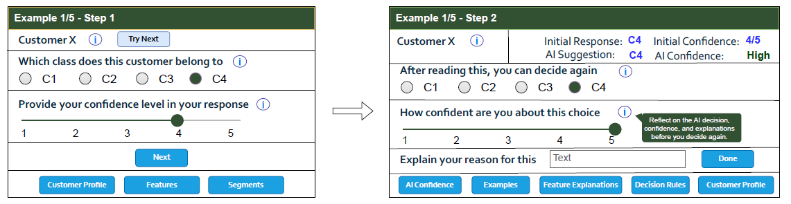

Critical engagement
Encourage users to evaluate AI advice rather than accept it automatically.
Human-AI interaction · Decision-making · Appropriate reliance
Exploring how interactive design, persuasive engagement, and measurement approaches can help people evaluate AI advice and make informed decisions rather than relying on it automatically.

01 / The challenge
People increasingly use AI-generated recommendations to inform decisions. However, users may over-rely on AI advice, accepting recommendations without sufficient evaluation, or under-rely on useful advice even when it is correct.
My research focuses on understanding the behavioral and interaction factors that influence appropriate reliance on AI.
02 / Study 1
I investigated how persuasive engagement strategies could reduce over-reliance on AI assistance in a customer classification task.
Using different persuasion approaches, I explored how the presentation of AI advice influences users' willingness to engage with, evaluate, and accept machine-generated recommendations.
Research focus: Understanding how interaction and persuasion strategies influence reliance on AI advice.
How AI advice is presented can shape whether people question it or accept it automatically.
03 / Study 2
Building on the initial investigation, I explored how interactive engagement with machine learning models can support appropriate reliance.
Using an AI-assisted customer classification scenario, I investigated the role of user interaction in helping people examine model outputs rather than passively accept AI recommendations.
Research focus: Exploring how interaction with AI models can encourage more thoughtful engagement and informed reliance.
04 / Study 3
Trust is frequently used to explain how people interact with AI, but trust and actual reliance are not necessarily the same.
I examined how human-AI reliance has been conceptualized and measured, identifying the need for clearer measurement constructs that distinguish trust in AI from behavioral reliance on its recommendations.
Research focus: Developing a stronger conceptual and measurement foundation for evaluating appropriate reliance in human-AI decision-making.
05 / Designing for people
Together, these studies contribute to understanding how AI interaction design, persuasive engagement, and measurement approaches shape human-AI decision-making.
My research emphasizes three principles:
Encourage users to evaluate AI advice rather than accept it automatically.
Support reliance that reflects the capabilities and limitations of AI systems.
Preserve users' ability to question, interpret, and make informed decisions.
Research goal
By distinguishing trust from behavioral reliance and studying how interaction shapes engagement, this work supports human-centered AI decision-making.